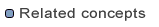

The Data Views
Another option for analysing the source data and the
transformed data is using the Source Data and
Transformed Data views.
They display the attribute values of sample features
that are picked from the source data. The features in
the "Transformed Data" view are already transformed
using the alignment mapping. To select sample features
of a certain type you have to select the corresponding
feature type in the list. Additionally you can
define a filter in the text field. The buttons next to the
filter field on the right provide support for defining
your filter (Inserting attribute names/Create filter using
a form).
To analyse features and their transformed counterparts
you can synchronize both views by clicking on
the little table icon in the "Transformed Data" View. If
the views are synchronized, in the "Transformed
Data" only the transformed features of the features
displayed in the "Reference Data" view will be available.
You can filter the transformed features by their
feature type.
You can also synchronize the "Transformed Data"
View to the selection made in the Map View, or to
just show manually filtered source features.
Saving the transformed data
Using the "Save transformation result" entry in the
"File" menu you have the possibility to save the
transformed features to a GML file. The output file
can be validated against the target schema to reveal
eventual remaining errors in the mapping.

Source Data
Transformed Data